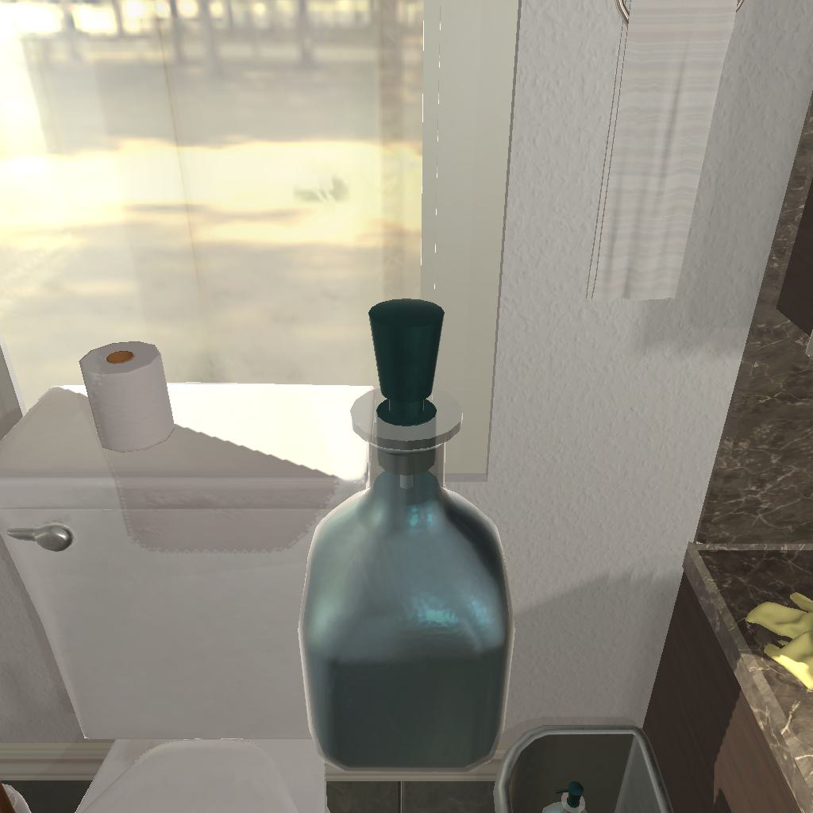

---------------------------------------------------------task: 27---------------------------------------------------------
--------------------------------------------------------------------------------------------------------------------------------------------------------------------
--------------------------------------------------------------------------------------------------------------------------------------------------------------------
Step:--------------------------------------------------------------------------15-------------------------------------------------------------------------------
----------------------------------------
VLM Prompt:
Image1:
Image2:
**Instruction**
1. Analyze the provided images to identify all visible household objects and compare the difference between images (e.h. whether the object is opened or not and taken on hand or not), focusing on those relevant to the task description "find two soapbottle and put them in garbagecan."
2. Use the analysis of images and the task hint "The agent must find an object of the desired type, pick it up, find the correct location to place it, put it down there, then look for another object of the desired type, pick it up, return to previous location, and put it down there with the other object." to answer the question: what is the most reasonable action in the choices for the task description "find two soapbottle and put them in garbagecan"?
3. Decide and write the answer using the template: The answer is: (i): , where i is the real number. If there is no desired object in images, search every place based on **Initial Observation** to find the object. And if no one is exactly correct, choose a similar answer.
**Initial Observation**
You are in the middle of a room. Looking quickly around you, you can see countertop (1), sinkbasin (1-2), sink (1-2), garbagecan (1), drawer (1-2), toilet (1), handtowelholder (1)
**Answer Choices**
(1): go to countertop 1
(2): go to sinkbasin 1
(3): go to sink 1
(4): go to drawer 1
(5): go to drawer 2
(6): go to sink 2
(7): go to toilet 1
(8): go to handtowelholder 1
(9): put soapbottle 2 in/on garbagecan 1
(10): examine soapbottle 2
(11): examine garbagecan 1
**Answer**
Let's think step by step by following the instructions.
----------------------------------------
----------------------------------------
Original Response:
Firstly, we analyze the provided images. In both images, we see a soap bottle on the countertop next to the sink basin. There is no visible difference between the two images regarding the soap bottle's state (it is not opened or taken on hand in either image).
Based on the task description "find two soapbottle and put them in garbagecan," we know that we need to find another soap bottle. The task hint guides us to find an object of the desired type, pick it up, and then find the correct location to place it.
From the initial observation, we know that the location of the garbage can is visible in image 1. Since we already have one soap bottle in sight, we need to look for another one. To do this, we should search every place based on the initial observation.
Looking at the answer choices, the most reasonable action to find another soap bottle would be to search the locations where it is most likely to be found. We can rule out options like "go to toilet 1" and "go to handtowelholder 1" as these are not typical places to find a soap bottle.
The remaining options are "go to countertop 1," "go to sinkbasin 1," "go to sink 1," "go to drawer 1," "go to drawer 2," and "go to sink 2." Since we already see the soap bottle on the countertop next to sink basin 1, we can rule out "go to countertop 1" and "go to sinkbasin 1."
The most likely places to find another soap bottle would be in the drawers or at another sink. Therefore, the most reasonable actions would be to check the drawers or the other sink.
The answer is: (4): go to drawer 1 or (5): go to drawer 2 or (6): go to sink 2.
----------------------------------------
----------------------------------------
>>> Refine Original VLM Response and Get Pure Action: go to drawer 1 or (5): go to drawer 2 or (6): go to sink 2
----------------------------------------
-----------------------------------------------------------------
Running time: 19.785134077072144 seconds
Total Money: 14.231940000000002
-----------------------------------------------------------------
-----------------------------------------------------------------
Text Observation:Nothing happens.
-----------------------------------------------------------------
UNSUCCEED